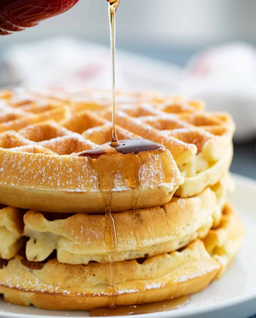

×
Sample
Breakfast

Fractions
- 1/8 cup
- 1/4 cup
- 1/3 cup
- 1/2 cup
- 2/3 cup
- 3/4 cup
-
7/8 cup
-
1 1/8 cup
- 1 1/4 cup
- 1 1/3 cup
- 1 1/2 cup
- 1 2/3 cup
- 1 3/4 cup
-
1 7/8 cup
-
10 1/8 cup
- 10 1/4 cup
- 10 1/3 cup
- 10 1/2 cup
- 10 2/3 cup
- 10 3/4 cup
- 10 7/8 cup
Conventional Units
- 1 cup
- 2 cups
- 1/2 cup
- 1/2 cup
- 1 tbsp
- 1 tablespoon
- 2 tablespoons
- 1000 tbsp
- 1/2 tsp
- 1/2 teaspoon
Numeric Units
- 1lb
- 1oz
- 1g
- 1mL
-
1L
-
1 lb
- 1 oz
- 1 g
- 1 mL
- 1 L
Edge Cases
- () milk or buttermilk
- () vegetable oil or melted butter
- 1 - 2 tbsp
- 1-2 tbsp
- 1 1/2 - 2 1/2 tbsp
- 1 1/2-2 1/2 tbsp
Instructions
- Preheat your waffle iron.
- In a bowl, whisk the eggs, milk, oil/butter, and vanilla.
- Add the of the dry waffle mix and stir until just combined (lumps are okay—don't overmix).
- Cook in a preheated waffle iron per manufacturer’s instructions (usually 3–5 minutes until golden).
- Serve warm with toppings like butter, syrup, fruit, or whipped cream.
Tips
- Storage plate in oven at 180°F
- Liberally brush butter onto waffle maker between waffles